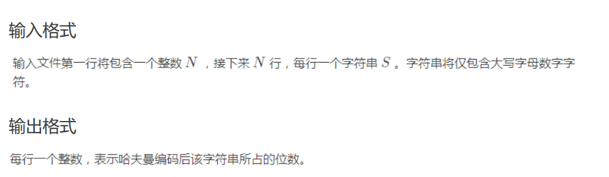

更多算法的参考代码
所谓“参考代码”，是课上提到并讲解了，但是难度较大或者用处较少的算法和数据结构的代码。
哈夫曼树

参考代码
#include <bits/stdc++.h>
using namespace std;
#define ll long long
const int MAXN = 1e3 + 5;
char s[MAXN];
int main() {
int T;
scanf("%d", &T);
while (T--) {
priority_queue<int, vector<int>, greater<int>> q;
map<int, int> mp;
scanf("%s", s + 1);
int len = strlen(s + 1), cnt = 0;
for (int i = 1; i <= len; ++i) {
mp[int(s[i])]++;
}
for (auto it = mp.begin(); it != mp.end(); ++it) {
int x = it->second;
q.push(x);
}
while (!q.empty()) {
if (q.size() == 1) {
printf("%d\n", cnt);
break;
}
int ans = q.top();
q.pop();
ans += q.top();
q.pop();
q.push(ans);
cnt += ans;
}
}
return 0;
}
二叉查找树
参考代码
struct TreeNode {
int key;
TreeNode *left;
TreeNode *right;
// 维护其他信息，如高度，节点数量等
int size; // 当前节点为根的子树大小
int count; // 当前节点的重复数量
TreeNode(int value)
: key(value), size(1), count(1), left(nullptr), right(nullptr) {}
};
TreeNode *findMinNode(TreeNode *root) {
while (root->left != nullptr) {
root = root->left;
}
return root;
}
bool search(TreeNode *root, int target) {
if (root == nullptr) {
return false;
}
if (root->key == target) {
return true;
} else if (target < root->key) {
return search(root->left, target);
} else {
return search(root->right, target);
}
}
TreeNode *insert(TreeNode *root, int value) {
if (root == nullptr) {
return new TreeNode(value);
}
if (value < root->key) {
root->left = insert(root->left, value);
} else if (value > root->key) {
root->right = insert(root->right, value);
} else {
root->count++; // 节点值相等，增加重复数量
}
root->size = root->count + (root->left ? root->left->size : 0) +
(root->right ? root->right->size : 0); // 更新节点的子树大小
return root;
}
// 此处返回值为删除 value 后的新 root
TreeNode *remove(TreeNode *root, int value) {
if (root == nullptr) {
return root;
}
if (value < root->key) {
root->left = remove(root->left, value);
} else if (value > root->key) {
root->right = remove(root->right, value);
} else {
if (root->count > 1) {
root->count--; // 节点重复数量大于1，减少重复数量
} else {
if (root->left == nullptr) {
TreeNode *temp = root->right;
delete root;
return temp;
} else if (root->right == nullptr) {
TreeNode *temp = root->left;
delete root;
return temp;
} else {
TreeNode *successor = findMinNode(root->right);
root->key = successor->key;
root->count = successor->count; // 更新重复数量
// 当 successor->count > 1时，也应该删除该节点，否则
// 后续的删除只会减少重复数量
successor->count = 1;
root->right = remove(root->right, successor->key);
}
}
}
// 继续维护size，不写成 --root->size;
// 是因为value可能不在树中，从而可能未发生删除
root->size = root->count + (root->left ? root->left->size : 0) +
(root->right ? root->right->size : 0);
return root;
}
平衡树
参考代码
#include <bits/stdc++.h>
using namespace std;
struct AVL_tree {
struct point {
int val;
int height;
point *ls;
point *rs;
point *fa;
point() {
val = 0;
height = 1;
ls = rs = fa = NULL;
}
};
point *root;
AVL_tree() { root = NULL; }
inline void push_up(point *p) {
if (p != NULL) p->height = max(h(p->ls), h(p->rs)) + 1;
}
inline int h(point *p) {
if (p == NULL) return 0;
return p->height;
}
inline void take_place(point *q, point *p) {
if (root == p) root = q;
else if (p->fa->ls == p) p->fa->ls = q;
else p->fa->rs = q;
if (q != NULL) q->fa = p->fa;
}
point *search(point *p, int val) {
if (p == NULL || val == p->val) return p;
if (val < p->val) return search(p->ls, val);
return search(p->rs, val);
}
point *maximum(point *p) {
while (p->rs != NULL) p = p->rs;
return p;
}
point *minimum(point *p) {
while (p->ls != NULL) p = p->ls;
return p;
}
void turn_right(point *p) {
take_place(p->ls, p);
p->fa = p->ls;
p->ls = p->fa->rs;
if (p->fa->rs != NULL) p->fa->rs->fa = p;
p->fa->rs = p;
}
void turn_left(point *p) {
take_place(p->rs, p);
p->fa = p->rs;
p->rs = p->fa->ls;
if (p->fa->ls != NULL) p->fa->ls->fa = p;
p->fa->ls = p;
}
void balance(point *p) {
if (h(p->ls) - h(p->rs) == 2) {
if (h(p->ls->rs) > h(p->ls->ls)) turn_left(p->ls);
turn_right(p);
} else if (h(p->ls) - h(p->rs) == -2) {
if (h(p->rs->ls) > h(p->rs->rs)) turn_right(p->rs);
turn_left(p);
}
}
void insert(point *r, point *p) {
if (p->val < r->val) {
if (r->ls == NULL) {
r->ls = p;
p->fa = r;
} else insert(r->ls, p);
} else {
if (r->rs == NULL) {
r->rs = p;
p->fa = r;
} else insert(r->rs, p);
}
push_up(r);
balance(r);
}
void ins(int val) {
point *p = new point();
p->val = val;
if (root == NULL) {
root = p;
p->fa = NULL;
return;
}
insert(root, p);
}
void print(point *p) {
if (p != NULL) {
print(p->ls);
printf("%d ", p->val);
print(p->rs);
}
}
void del_one(point *p) {
point *q = p->ls;
if (q == NULL) q = p->rs;
take_place(q, p);
delete p;
}
void del(point *p) {
point *q;
if (p->ls == NULL || p->rs == NULL) q = p;
else {
q = minimum(p->rs);
p->val = q->val;
}
point *r = q->fa;
del_one(q);
while (r != NULL) {
push_up(r);
balance(r);
r = r->fa;
}
}
void del(int val) {
point *p = search(root, val);
if (p == NULL) return;
del(p);
}
};
Dijkstra
朴素实现：
struct edge {
int v, w;
};
vector<edge> e[MAXN];
int dis[MAXN], vis[MAXN];
void dijkstra(int n, int s) {
memset(dis, 0x3f, (n + 1) * sizeof(int));
dis[s] = 0;
for (int i = 1; i <= n; i++) {
int u = 0, mind = 0x3f3f3f3f;
for (int j = 1; j <= n; j++)
if (!vis[j] && dis[j] < mind) u = j, mind = dis[j];
vis[u] = true;
for (auto ed : e[u]) {
int v = ed.v, w = ed.w;
if (dis[v] > dis[u] + w) dis[v] = dis[u] + w;
}
}
}
优先队列优化：
struct edge {
int v, w;
};
struct node {
int dis, u;
bool operator>(const node& a) const { return dis > a.dis; }
};
vector<edge> e[MAXN];
int dis[MAXN], vis[MAXN];
priority_queue<node, vector<node>, greater<node>> q;
void dijkstra(int n, int s) {
memset(dis, 0x3f, (n + 1) * sizeof(int));
memset(vis, 0, (n + 1) * sizeof(int));
dis[s] = 0;
q.push({0, s});
while (!q.empty()) {
int u = q.top().u;
q.pop();
if (vis[u]) continue;
vis[u] = 1;
for (auto ed : e[u]) {
int v = ed.v, w = ed.w;
if (dis[v] > dis[u] + w) {
dis[v] = dis[u] + w;
q.push({dis[v], v});
}
}
}
}
Floyd
for (k = 1; k <= n; k++) {
for (x = 1; x <= n; x++) {
for (y = 1; y <= n; y++) {
f[x][y] = min(f[x][y], f[x][k] + f[k][y]);
}
}
}
Bellman/SPFA
Bellman：
struct Edge {
int u, v, w;
};
vector<Edge> edge;
int dis[MAXN], u, v, w;
constexpr int INF = 0x3f3f3f3f;
bool bellmanford(int n, int s) {
memset(dis, 0x3f, (n + 1) * sizeof(int));
dis[s] = 0;
bool flag = false; // 判断一轮循环过程中是否发生松弛操作
for (int i = 1; i <= n; i++) {
flag = false;
for (int j = 0; j < edge.size(); j++) {
u = edge[j].u, v = edge[j].v, w = edge[j].w;
if (dis[u] == INF) continue;
// 无穷大与常数加减仍然为无穷大
// 因此最短路长度为 INF 的点引出的边不可能发生松弛操作
if (dis[v] > dis[u] + w) {
dis[v] = dis[u] + w;
flag = true;
}
}
// 没有可以松弛的边时就停止算法
if (!flag) {
break;
}
}
// 第 n 轮循环仍然可以松弛时说明 s 点可以抵达一个负环
return flag;
}
队列优化：SPFA
struct edge {
int v, w;
};
vector<edge> e[MAXN];
int dis[MAXN], cnt[MAXN], vis[MAXN];
queue<int> q;
bool spfa(int n, int s) {
memset(dis, 0x3f, (n + 1) * sizeof(int));
dis[s] = 0, vis[s] = 1;
q.push(s);
while (!q.empty()) {
int u = q.front();
q.pop(), vis[u] = 0;
for (auto ed : e[u]) {
int v = ed.v, w = ed.w;
if (dis[v] > dis[u] + w) {
dis[v] = dis[u] + w;
cnt[v] = cnt[u] + 1; // 记录最短路经过的边数
if (cnt[v] >= n) return false;
// 在不经过负环的情况下，最短路至多经过 n - 1 条边
// 因此如果经过了多于 n 条边，一定说明经过了负环
if (!vis[v]) q.push(v), vis[v] = 1;
}
}
}
return true;
}
Prim
参考代码
// 使用二叉堆优化的 Prim 算法。
#include <cstring>
#include <iostream>
#include <queue>
using namespace std;
constexpr int N = 5050, M = 2e5 + 10;
struct E {
int v, w, x;
} e[M * 2];
int n, m, h[N], cnte;
void adde(int u, int v, int w) { e[++cnte] = E{v, w, h[u]}, h[u] = cnte; }
struct S {
int u, d;
};
bool operator<(const S &x, const S &y) { return x.d > y.d; }
priority_queue<S> q;
int dis[N];
bool vis[N];
int res = 0, cnt = 0;
void Prim() {
memset(dis, 0x3f, sizeof(dis));
dis[1] = 0;
q.push({1, 0});
while (!q.empty()) {
if (cnt >= n) break;
int u = q.top().u, d = q.top().d;
q.pop();
if (vis[u]) continue;
vis[u] = true;
++cnt;
res += d;
for (int i = h[u]; i; i = e[i].x) {
int v = e[i].v, w = e[i].w;
if (w < dis[v]) {
dis[v] = w, q.push({v, w});
}
}
}
}
int main() {
cin >> n >> m;
for (int i = 1, u, v, w; i <= m; ++i) {
cin >> u >> v >> w, adde(u, v, w), adde(v, u, w);
}
Prim();
if (cnt == n) cout << res;
else cout << "No MST.";
return 0;
}
Kruskal
参考代码
#include <algorithm>
#include <iostream>
using namespace std;
int fa[1010]; // 定义父亲
int n, m, k;
struct edge {
int u, v, w;
};
int l;
edge g[10010];
void add(int u, int v, int w) {
l++;
g[l].u = u;
g[l].v = v;
g[l].w = w;
}
// 标准并查集
int findroot(int x) { return fa[x] == x ? x : fa[x] = findroot(fa[x]); }
void Merge(int x, int y) {
x = findroot(x);
y = findroot(y);
fa[x] = y;
}
bool cmp(edge A, edge B) { return A.w < B.w; }
// Kruskal 算法
void kruskal() {
int tot = 0; // 存已选了的边数
int ans = 0; // 存总的代价
for (int i = 1; i <= m; i++) {
int xr = findroot(g[i].u), yr = findroot(g[i].v);
if (xr != yr) { // 如果父亲不一样
Merge(xr, yr); // 合并
tot++; // 边数增加
ans += g[i].w; // 代价增加
}
if (tot >= (n - k)) { // 检查选的边数是否满足 k 个棉花糖
cout << ans << '\n';
return;
}
}
cout << "No Answer\n"; // 无法连成
}
int main() {
cin >> n >> m >> k;
for (int i = 1; i <= n; i++) { // 初始化
fa[i] = i;
}
for (int i = 1; i <= m; i++) {
int u, v, w;
cin >> u >> v >> w;
add(u, v, w); // 添加边
}
sort(g + 1, g + m + 1, cmp); // 先按边权排序
kruskal();
return 0;
}
KMP
https://www.luogu.com.cn/problem/P3375
#include <bits/stdc++.h>
using namespace std;
char s1[1000010], s2[1000010];
int kmp[1000010];
int main() {
scanf("%s", s1 + 1);
int l1 = strlen(s1 + 1);
scanf("%s", s2 + 1);
int l2 = strlen(s2 + 1);
int j = 0;
for (int i = 2; i <= l2; i++) {
while (j && s2[j + 1] != s2[i]) j = kmp[j];
if (s2[j + 1] == s2[i]) j++;
kmp[i] = j;
}
j = 0;
for (int i = 1; i <= l1; i++) {
while (j && s2[j + 1] != s1[i]) j = kmp[j];
if (s2[j + 1] == s1[i]) j++;
if (j == l2) {
printf("%d\n", i - l2 + 1);
j = kmp[j];
}
}
for (int i = 1; i <= l2; i++) {
printf("%d%c", kmp[i], " \n"[i == l2]);
}
return 0;
}
哈希表
拉链法：
constexpr int SIZE = 1000000;
constexpr int M = 999997;
struct HashTable {
struct Node {
int next, value, key;
} data[SIZE];
int head[M], size;
int f(int key) { return (key % M + M) % M; }
int get(int key) {
for (int p = head[f(key)]; p; p = data[p].next)
if (data[p].key == key) return data[p].value;
return -1;
}
int modify(int key, int value) {
for (int p = head[f(key)]; p; p = data[p].next)
if (data[p].key == key) return data[p].value = value;
}
int add(int key, int value) {
if (get(key) != -1) return -1;
data[++size] = Node{head[f(key)], value, key};
head[f(key)] = size;
return value;
}
};
线性探查法：
constexpr int N = 360007; // N 是最大可以存储的元素数量
class Hash {
private:
int keys[N];
int values[N];
public:
Hash() { memset(values, 0, sizeof(values)); }
int& operator[](int n) {
// 返回一个指向对应 Hash[Key] 的引用
// 修改成不为 0 的值 0 时候视为空
int idx = (n % N + N) % N, cnt = 1;
while (keys[idx] != n && values[idx] != 0) {
idx = (idx + cnt * cnt) % N;
cnt += 1;
}
keys[idx] = n;
return values[idx];
}
};